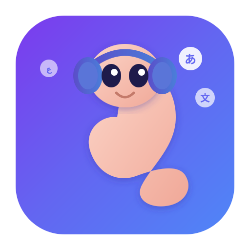
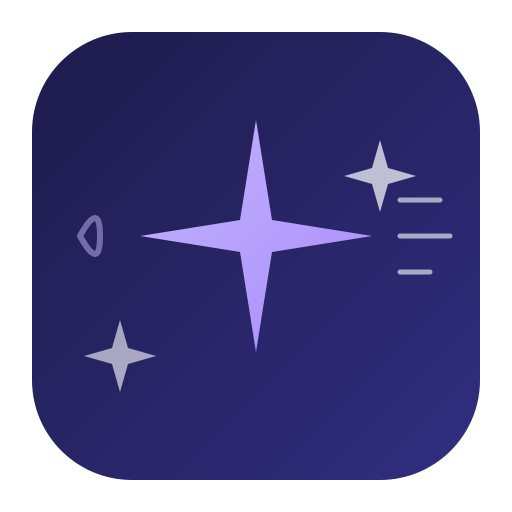
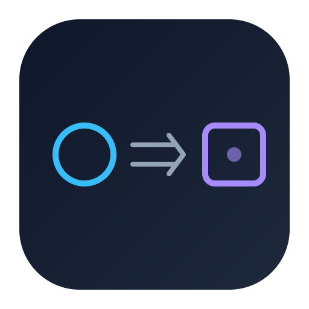
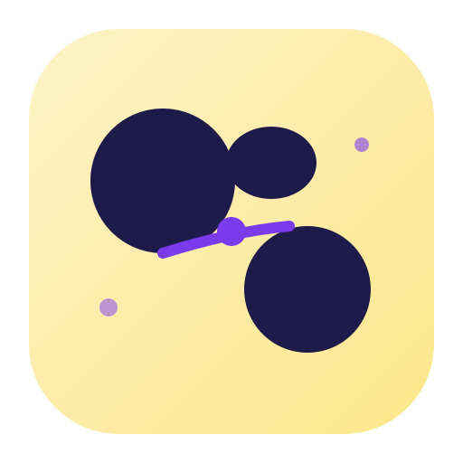
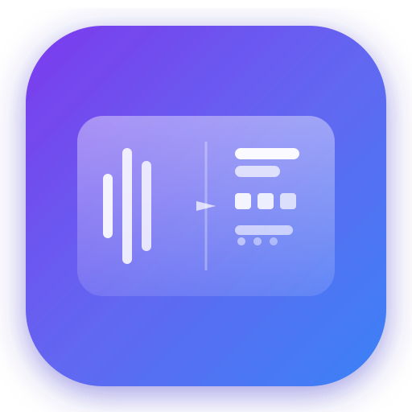

Real-time audio transcription & translation
Cleaned up in Figma

Simplified for favicon/app icon use

Sparkle transformation — audio in, multi-language out
Flowing wind — one input transforms to many outputs
Cute speech bubble mascot with floating scripts

Ultra-minimal: circle → equals/arrow → square

Warm two-tone patches with flowing connection

Clean vertical split: waveform | multi-script output
Clean glass panel with text lines